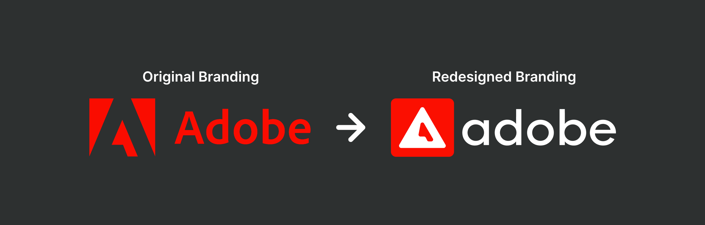
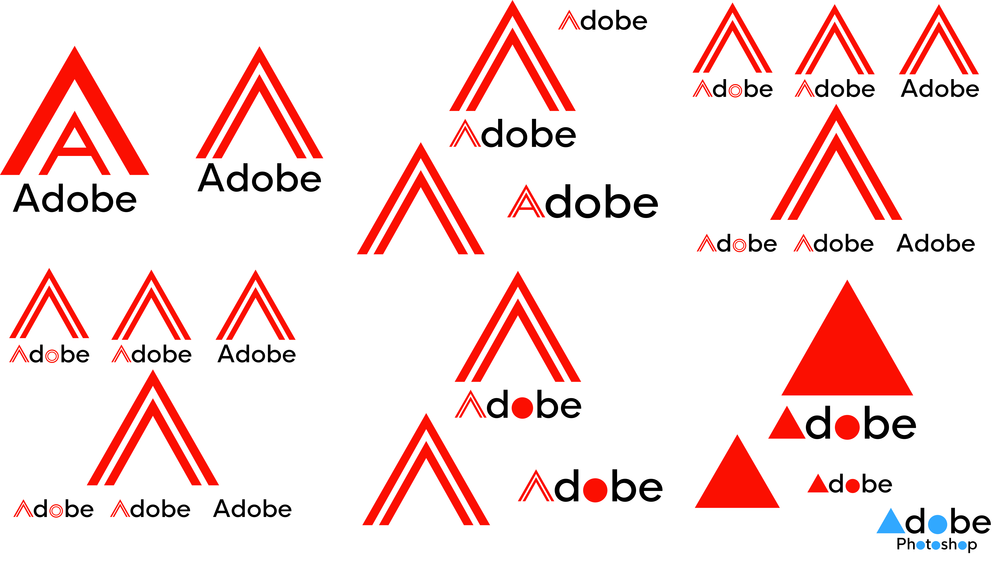

Adobe Branding Redesign
Uni Work - This range of work was produced during my first year of University.
This is my final piece which was made for the Doing Project. I was tasked to redesign branding for an existing company, as I'm very familiar with the Adobe suite and have used it in the past quite a lot, I decided to redesign the Adobe logo.

Design Iterations:
This project started as an exploration of the Adobe logo, aiming to reimagine the brand while keeping elements of its original identity. I began by experimenting with the iconic 'A' shape, using simple geometric forms like triangles and layered lines to see how far I could push the idea without losing its recognisability. I tried out different typefaces and layouts, playing with weight, shape, and composition to find something that felt modern but still familiar.

Colour Pallete:
As the designs progressed, I moved towards a more refined and minimal style. The final outcome features a bold red 'A' set inside a rounded triangle on a dark background, creating a strong contrast that feels contemporary and professional. The lowercase type complements the symbol without drawing too much attention, and I created several variations to show how the logo could adapt across different formats. The dark version in particular gives the logo a more premium, polished look while keeping it versatile enough for use in both digital and print settings.